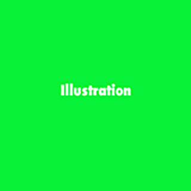
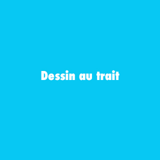
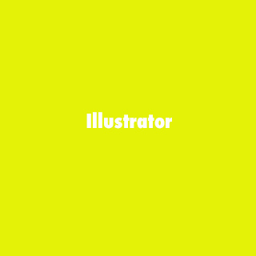

L'illustration est ce que je réfère dans le dessin. Que ce soit des mises en scènes la création de visages expressif, de personnages...

Le dessin au trait est il me semble la plus belle des mises en valeur. J'adore le côté crayonné, les croquis brouillous avec du volume, différentes épaisseur du traits.

Je me sers de ce logiciel depuis longtemps afin de colorer mes dessins et de les mettre en valeur.